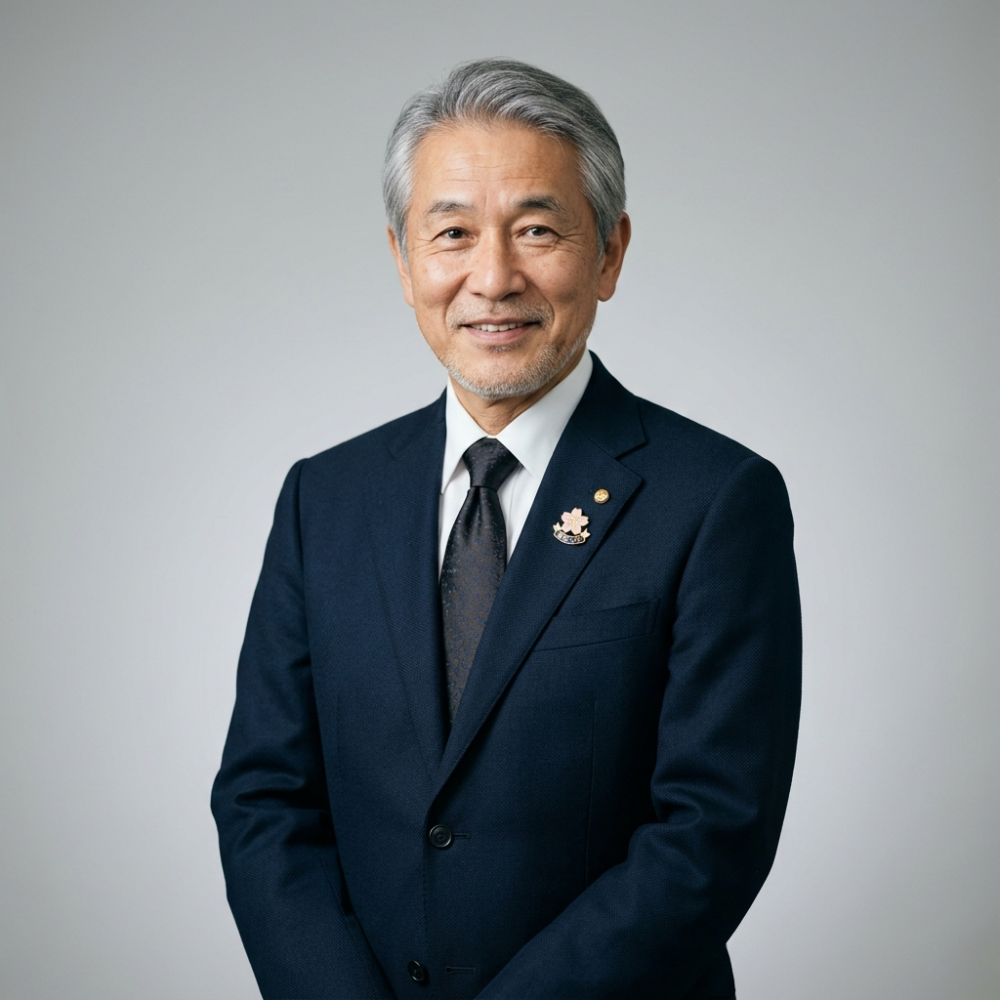

学長
山田 一郎
学長メッセージ
「知識を持つ人材」ではなく、
「知を使い社会を変える人材」を育成する。
現代社会は、技術革新・価値観の多様化・国際化が同時に進行し、単一の正解が存在しない時代へと移行しています。その中で大学に求められる役割は、知識の伝達ではなく、「問いを立て続ける力」を養うことにあります。
本学は、専門性の深化とともに、分野横断的思考、倫理観、対話力を重視し、社会の複雑性に向き合う人材を育成します。